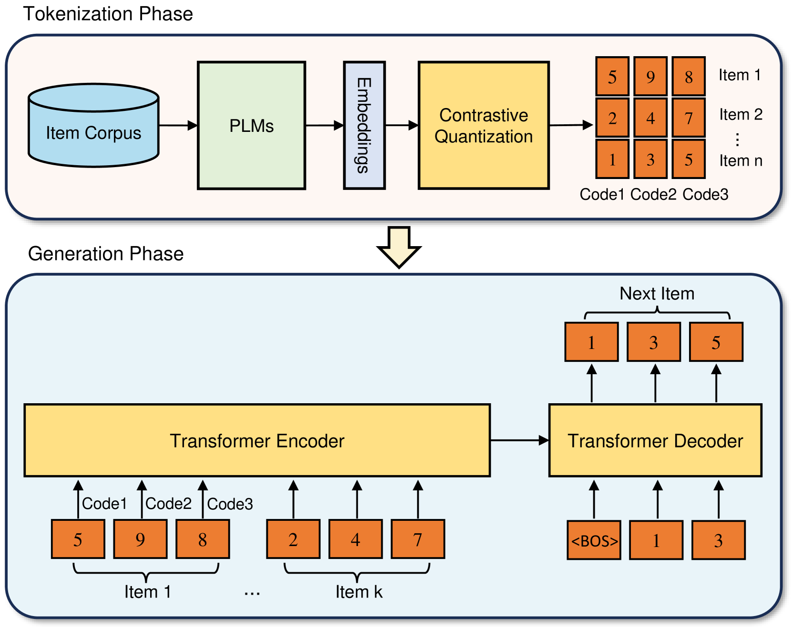
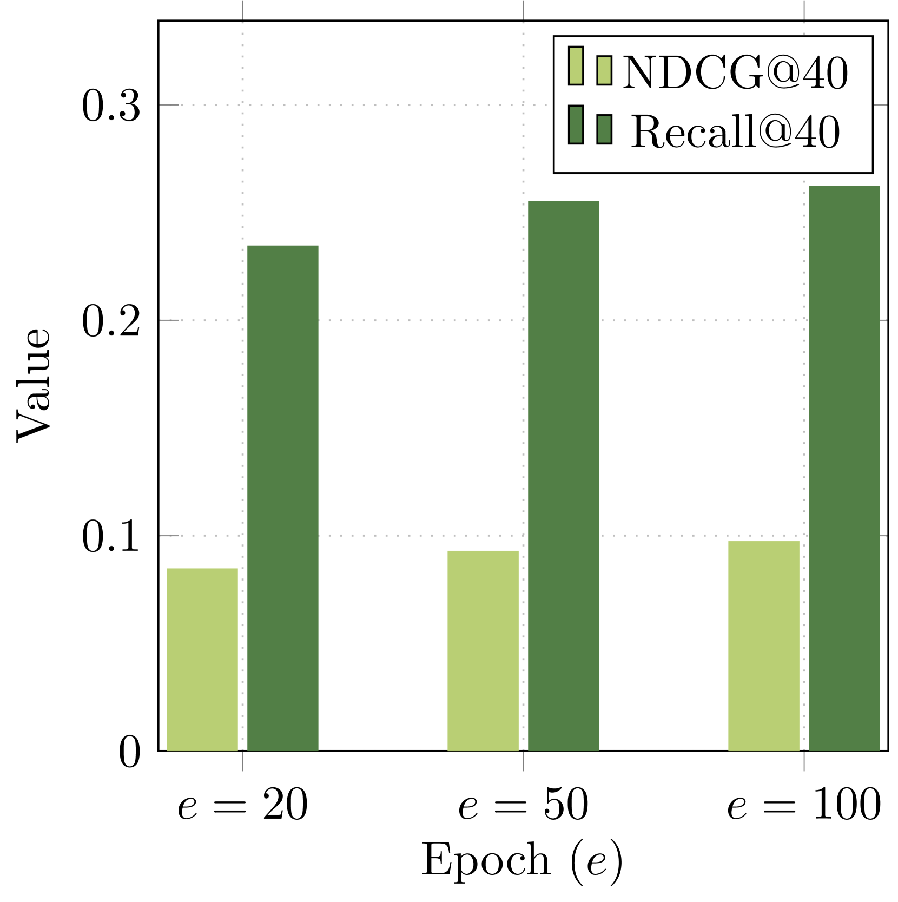
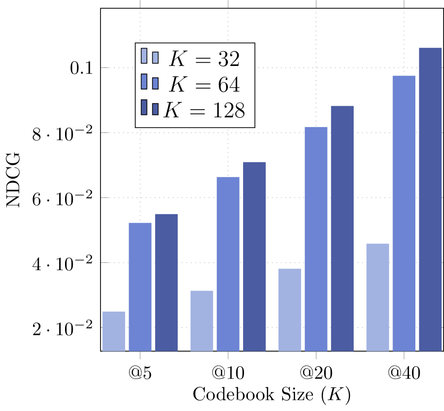
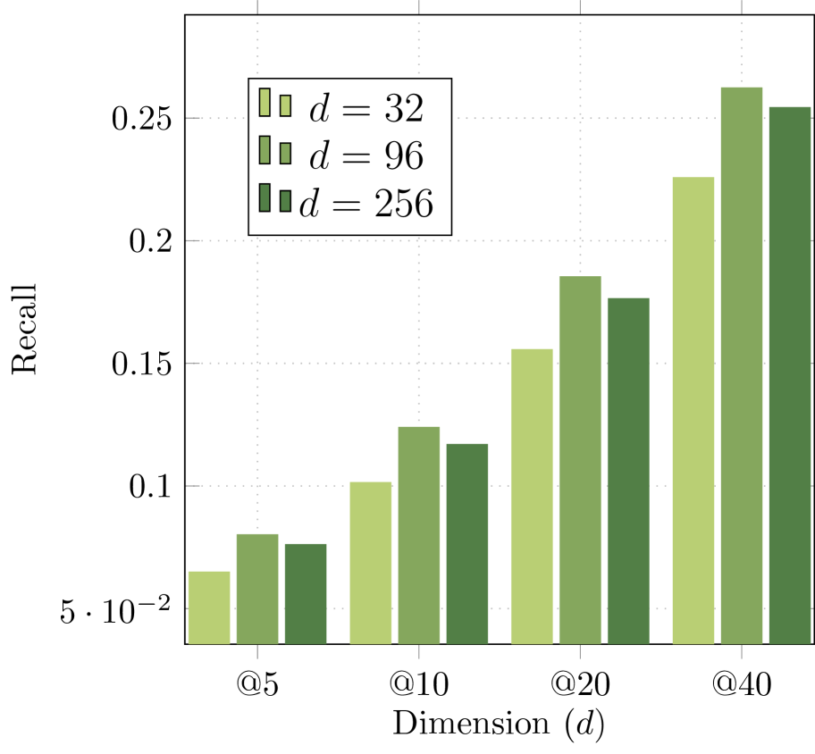

CoST: Contrastive Quantization based Semantic Tokenization for Generative Recommendation
Подробное саммари статьи:
Авторы: Jieming Zhu, Mengqun Jin, Qijiong Liu, Zexuan Qiu, Zhenhua Dong, Xiu Li.
Аффилиации: Huawei Technologies (China); University Town of Shenzhen; Tsinghua University.
1. Коротко: о чем статья
CoST предлагает улучшить этап semantic tokenization в генеративных рекомендательных системах. В таких системах item retrieval формулируется как задача генерации последовательности токенов: модель по истории пользователя генерирует не вектор для ANN-поиска, а дискретные semantic IDs целевого item'а. Это похоже на то, как языковая модель генерирует токены текста, только токены здесь кодируют товары, новости или другие объекты рекомендаций.
Главная идея статьи: стандартная RQ-VAE-токенизация, используемая в TIGER, обучается через точную реконструкцию эмбеддинга item'а, но для retrieval важнее не восстановить embedding один-в-один, а сохранить относительные отношения между item'ами: какой item ближе, какой дальше, какие объекты нужно различать в плотных областях пространства. CoST заменяет MSE-реконструкцию на contrastive loss между исходным embedding'ом item'а и его реконструкцией после квантования. То есть реконструкция должна быть ближе к своему исходному item'у, чем к реконструкциям других item'ов в batch'е.
В экспериментах CoST используется как drop-in замена RQ-VAE-токенизации внутри TIGER. На MIND авторы показывают до +43.34% Recall@5 и +43.76% NDCG@5 относительно reconstruction-based RQ-VAE. На Amazon Office улучшения тоже есть, но они заметно слабее на большем Office(L), особенно по Recall.
2. Контекст: зачем нужны semantic tokens
Типичный промышленный recommender часто работает по схеме retrieve-then-rank:
- Retrieval stage быстро достает несколько сотен или тысяч кандидатов из большого каталога.
- Ranking stage дорого и точно переоценивает кандидатов.
Классический retrieval обычно строится через:
- two-tower models: user tower и item tower, затем dot product / cosine similarity;
- graph-based retrieval: item-user graph, GNN или упрощенные graph embeddings;
- ANN index, например Faiss, для быстрого top-k поиска по векторному пространству.
У такого подхода есть несколько ограничений:
- retrieval score часто ограничен простой похожестью векторов, например dot product;
- embedding model и ANN index оптимизируются раздельно;
- ANN-инфраструктура является внешним недифференцируемым компонентом;
- модель retrieval не генерирует item напрямую, а только предоставляет вектор для поиска.
Генеративный retrieval предлагает альтернативу: представить item не как один атомарный ID и не только как dense vector, а как последовательность дискретных semantic tokens. Тогда задача next-item recommendation превращается в seq2seq:
история пользователя -> последовательность токенов следующего item'аПосле генерации токенов модель делает lookup в таблице semantic token sequence -> item ID и получает рекомендации.
3. Как выглядит generative recommendation pipeline
В статье используется framework, близкий к TIGER:
- Tokenization phase
- Берутся текстовые поля item'а: категория, подкатегория, title, description, brand и т.п.
- Они превращаются в dense semantic embedding через pretrained text encoder, например Sentence-T5 или E5.
- Затем embedding дискретизируется в последовательность semantic tokens.
- Generation phase
- История пользователя представляется как длинная последовательность semantic tokens всех прошлых item'ов.
- Encoder-decoder Transformer обучается предсказывать tokens следующего item'а.
- На inference используется beam search.
- Сгенерированные token sequences мапятся обратно в item IDs.
Авторы подчеркивают: качество первой фазы критично. Если токены плохо отражают item space, даже хороший Transformer дальше будет учиться на плохом дискретном представлении.
4. Мотивация CoST
4.1. Что не так с RQ-VAE в этой задаче
TIGER использует RQ-VAE, чтобы превратить item embedding в tuple кодов. RQ-VAE учится минимизировать reconstruction loss: исходный embedding x после encoder, residual quantization и decoder должен быть восстановлен как x_hat, близкий к x по MSE.
Это логично для задач вроде image/audio tokenization, где tokenization должна сохранить достаточно информации для восстановления сигнала. Но recommendation retrieval имеет другую цель. Там не обязательно идеально восстановить исходный embedding; важнее:
- различать похожие, но разные item'ы;
- сохранять локальную структуру соседства;
- избегать слипания популярных или семантически близких item'ов в одинаковые token sequences;
- строить token space, удобный для autoregressive generation.
Авторы утверждают, что reconstruction-based objective рассматривает item'ы слишком независимо. Каждый item пытаются восстановить сам по себе, без явного требования правильно организовать отношения между item'ами внутри batch'а или локального neighborhood.
4.2. Проблема плотных областей и long tail
В recommender data часто есть long-tail distribution:
- мало популярных item'ов имеют много взаимодействий;
- много редких item'ов имеют мало взаимодействий;
- текстовые embedding'и могут образовывать плотные кластеры вокруг популярных тем или категорий.
Если RQ-VAE реконструирует embedding'и независимо, в плотной области несколько похожих item'ов могут получить одинаковые или очень похожие semantic IDs. Для генеративного retrieval это опасно: модель может сгенерировать правильный coarse semantic region, но не различить конкретный target item.
CoST пытается решить именно эту проблему: не просто приблизить x_hat к x, а сделать так, чтобы x_hat_i был более похож на свой x_i, чем на другие x_j / x_hat_j из batch'а.
4.3. Главный сдвиг в постановке задачи
RQ-VAE спрашивает:
Насколько точно я могу восстановить исходный embedding item'а из его дискретных кодов?
CoST спрашивает:
Насколько хорошо я могу отличить правильную reconstruction данного item'а от reconstruction других item'ов?
Это важный концептуальный сдвиг: CoST делает semantic tokenization более retrieval-oriented.
5. Базовая механика residual quantization
CoST сохраняет архитектурный каркас RQ-VAE:
- encoder
E; - набор codebooks;
- residual quantizer;
- decoder;
- straight-through estimator / quantization loss для обучения codebooks.
Пусть x - dense item embedding, например 768-dimensional Sentence-T5 vector.
5.1. Encoder
Сначала MLP encoder переводит x в более низкоразмерное latent representation:
В экспериментах:
- входной embedding: 768 dimensions;
- encoder hidden layers:
[512, 256, 128]; - latent dimension: 96.
5.2. Residual quantization
Есть M codebooks:
где:
M- число уровней / codebooks;K- размер каждого codebook;e_i^k- code vector;- выбранный индекс
c_iстановится semantic token на уровнеi.
Процедура:
- Начальный residual:
- В первом codebook выбирается ближайший code vector:
- Считается остаток:
- Остаток квантуется вторым codebook.
- Процесс повторяется
Mраз.
На выходе item получает tuple:
В основном setup статьи:
M = 3;K = 64;- semantic ID каждого item'а - 3-token tuple;
- codebooks shared across three levels, согласно описанию авторов.
Теоретическая емкость token space при K=64, M=3 равна:
Для датасетов статьи этого достаточно: MIND содержит 12,251 item, Office(L) - 37,347 item. Но важно, что большая теоретическая емкость не гарантирует хорошую фактическую утилизацию codebook'ов и отсутствие коллизий.
6. Reconstruction-based objective: что делает RQ-VAE
После residual quantization code vectors суммируются:
Затем decoder восстанавливает embedding:
Классическая loss:
где:
L_rq - quantization/codebook loss со stop-gradient, аналогично VQ-VAE:
Смысл двух частей:
- первая часть двигает code vector к residual;
- вторая часть, commitment term, заставляет encoder output не убегать от выбранного code vector;
sgозначает stop-gradient;betaконтролирует commitment.
Чтобы снизить риск codebook collapse, авторы используют k-means initialization: на первом training batch делают k-means, а centroids берут как начальные code vectors.
7. Contrastive quantization в CoST
CoST сохраняет L_rq, но заменяет MSE-реконструкцию на contrastive objective.
7.1. Positive pair
Для item 0 positive pair:
где:
x_0- исходный semantic embedding item'а;x_hat_0- embedding, восстановленный после encoder, residual quantization и decoder.
7.2. Negative examples
Negatives - reconstructed vectors других item'ов в batch'е:
В тексте формула использует K как число других векторов в batch'е, что немного перегружает обозначения, потому что K уже используется как codebook size. По смыслу здесь речь о batch negatives.
7.3. Contrastive loss
Loss:
где:
<., .>- cosine similarity;tau- temperature;- positive pair должен получить максимальную вероятность среди reconstructed candidates.
Итоговая CoST objective:
В экспериментах:
alpha = 0.1;beta = 0.25;tau = 0.1.
7.4. Интуиция
MSE говорит: "восстанови координаты embedding'а".
Contrastive loss говорит: "сохрани идентичность item'а относительно других item'ов".
Это лучше соответствует retrieval: модель должна выбрать правильный item среди множества кандидатов. Даже если x_hat не идеально совпадает с x по всем координатам, он полезен, если остается ближе к своему item'у, чем к чужим.
7.5. Почему это может улучшить semantic IDs
CoST может помочь по нескольким причинам:
- Более явное разделение item'ов. В batch'е каждый item конкурирует с другими, что снижает вероятность слипания reconstruction'ов.
- Сохранение локального neighborhood. Если два item'а близки, contrastive objective вынуждает модель аккуратнее различать их, а не просто приблизительно реконструировать оба.
- Retrieval-aligned objective. Рекомендательная задача ближе к ranking/classification среди candidates, чем к regression reconstruction.
- Меньше зависимости от точной геометрии PLM embedding'а. MSE слепо наследует все координатные особенности embedding space, включая шум. Contrastive loss фокусируется на относительной близости.
8. Как CoST интегрируется в TIGER
CoST не предлагает новый generative recommender целиком. Это важно: вклад статьи находится в tokenization phase, а не в Transformer generation phase.
Pipeline:
- Для каждого item строится text embedding через Sentence-T5.
- CoST обучает residual quantizer с contrastive objective.
- Каждый item получает semantic token tuple.
- Последовательности взаимодействий пользователя заменяются последовательностями semantic tokens.
- TIGER-like encoder-decoder Transformer обучается next-item token generation.
- На inference:
- decoder генерирует token tuple;
- beam search возвращает несколько token sequences;
- token-to-item lookup превращает sequences в item IDs.
Сильная сторона такой постановки: CoST можно рассматривать как относительно локальную замену RQ-VAE в существующих generative retrieval системах.
Слабая сторона: если generation architecture, beam search или token-to-item mapping имеют собственные ограничения, CoST их не решает.
9. Рисунки и что в них важно
Figure 1: Framework of generative recommendation

Рисунок показывает две фазы:
- Tokenization Phase
- item corpus;
- PLM embeddings;
- contrastive quantization;
- каждому item назначается sequence из code tokens, например
(5, 9, 8).
- Generation Phase
- user history подается в Transformer encoder;
- Transformer decoder autoregressively генерирует semantic tokens следующего item;
- token sequence мапится обратно в item.
Почему рисунок полезен:
- Он фиксирует, что CoST работает до обучения recommendation Transformer.
- Он показывает, что semantic tokenization уменьшает vocabulary: вместо миллионов item IDs модель работает с тысячами code tokens.
- Он объясняет, почему ошибка токенизации потом распространяется на весь generation stage.
Практическая интерпретация: если tokenization делает плохие semantic IDs, Transformer будет учиться на "битом языке item'ов".
Figure 2: Reconstructive vs Contrastive Quantization

Это главный методологический рисунок.
Левая часть:
- input проходит quantization;
- output/reconstruction сравнивается с input через reconstruction loss;
- каждый item фактически оптимизируется сам по себе.
Правая часть:
- input/output своего item'а образуют positive pair;
- outputs других item'ов выступают negatives;
- contrastive loss заставляет correct reconstruction быть ближе к own input, чем к чужим.
Почему рисунок важен:
- Он показывает единственное ключевое изменение CoST относительно RQ-VAE: objective меняется с coordinate-level reconstruction на pairwise discrimination.
- Он помогает понять, почему авторы говорят о neighborhood relationships.
Figure 3: Temperature tau и число эпох


Рисунок анализирует MIND:
tauтестируется в{0.1, 0.5, 1.0};- CoST обучается 20 и 100 эпох;
- отдельно показывается динамика при 20, 50, 100 эпохах.
Выводы авторов:
- качество чувствительно к temperature;
- при 20 эпохах лучший Recall@40 получается при одном
tau, при 100 эпохах - при другом; - увеличение числа эпох улучшает NDCG и Recall, loss снижается.
Критическое замечание:
- такой результат означает не только "CoST хорошо обучается", но и то, что метод требует настройки training budget и
tau; - в production-постановке это может быть нетривиально, особенно при больших каталогах и частом обновлении item corpus.
Figure 4: Sensitivity analysis по codebook hyperparameters



Рисунок изучает:
- codebook size
K; - number of codebooks
M; - embedding dimension
d.
Основные выводы:
- увеличение
Kулучшает NDCG; - увеличение
Mулучшает NDCG; - увеличение
dс 32 до 96 помогает; d = 256уже ухудшает качество, авторы связывают это с overfitting.
Интерпретация:
- большее token space помогает точнее представить item'ы;
- но слишком высокая latent capacity может переобучаться;
- tokenization quality зависит от компромисса между емкостью semantic ID space и learnability генеративной модели.
10. Таблицы и результаты
Table 1: Dataset statistics
| Dataset | #Users | #Items | Seq_Len | Avg seq len | Median | |---|---:|---:|---|---:|---:| | MIND | 29,207 | 12,251 | [15, 70] | 25.06 | 22 | | Office(S) | 2,868 | 14,618 | [10, 20] | 13.21 | 12 | | Office(L) | 16,696 | 37,347 | [5, 50] | 8.38 | 12 |
Важные детали preprocessing:
- MIND: оставляют interactions с at least 15 users, sequence length capped at 70.
- Amazon Office: фильтруют users with fewer than 5 interactions.
- Office разделяют на small и large, чтобы посмотреть влияние числа item'ов.
- Для MIND используют category, sub-category, title.
- Для Amazon используют type, brand, title, category.
- Sentence-T5 дает 768-dimensional item embeddings.
Что бросается в глаза:
- Office(L) имеет больше item'ов, но средняя sequence length ниже, чем у MIND.
- Office(S) очень мал по users: 2,868, что делает результаты потенциально шумными.
- MIND выглядит наиболее сильным benchmark'ом в статье.
Table 2: Results on MIND
| Method | Metric | @5 | @10 | @20 | @40 | |---|---|---:|---:|---:|---:| | Random | NDCG | 0.0201 | 0.0265 | 0.0327 | 0.0390 | | Random | Recall | 0.0319 | 0.0519 | 0.0766 | 0.1075 | | L_re | NDCG | 0.0363 | 0.0474 | 0.0594 | 0.0727 | | L_re | Recall | 0.0560 | 0.0905 | 0.1384 | 0.2031 | | L_co | NDCG | 0.0522 | 0.0663 | 0.0817 | 0.0975 | | L_co | Recall | 0.0803 | 0.1241 | 0.1855 | 0.2625 | | L_re + L_co | NDCG | 0.0444 | 0.0574 | 0.0710 | 0.0865 | | L_re + L_co | Recall | 0.0677 | 0.1081 | 0.1621 | 0.2376 | | Improvement over L_re | NDCG | 43.76% | 39.90% | 37.52% | 34.10% | | Improvement over L_re | Recall | 43.34% | 37.21% | 34.05% | 29.24% |
Главный результат:
- pure contrastive CoST (
L_co) лучше reconstruction baseline (L_re) на всех k; - комбинация
L_re + L_coхуже, чем pureL_co, но лучшеL_re.
Это важная деталь: добавление reconstruction loss не помогает на MIND. Значит, точная реконструкция может не просто быть ненужной, а мешать retrieval-aligned tokenization.
Table 3: Results on Amazon Office
| Method | Metric | Office(S) @10 | Office(S) @20 | Office(L) @10 | Office(L) @20 | |---|---|---:|---:|---:|---:| | L_re | NDCG | 0.0024 | 0.0032 | 0.0041 | 0.0053 | | L_re | Recall | 0.0037 | 0.0068 | 0.0075 | 0.0123 | | L_co | NDCG | 0.0034 | 0.0043 | 0.0047 | 0.0059 | | L_co | Recall | 0.0060 | 0.0094 | 0.0079 | 0.0125 | | L_re + L_co | NDCG | 0.0035 | 0.0042 | 0.0042 | 0.0052 | | L_re + L_co | Recall | 0.0066 | 0.0096 | 0.0079 | 0.0119 | | Improvement | NDCG | 43.80% | 31.06% | 15.11% | 10.53% | | Improvement | Recall | 80.95% | 41.03% | 5.38% | 1.46% |
Интерпретация:
- на Office(S) gains большие, особенно Recall@10;
- на Office(L) gains существенно меньше;
L_re + L_coлучше на Office(S), но не на Office(L);- pure
L_coвыглядит устойчивее на большем наборе.
Критический момент:
- абсолютные значения метрик на Office очень низкие;
- относительные улучшения могут выглядеть впечатляюще из-за низкой базы;
- на Office(L) Recall improvement 1.46% at @20 практически скромный.
11. Алгоритм CoST пошагово
Ниже - реконструкция алгоритма в удобном виде.
Input
- Item corpus
I. - Для каждого item доступны текстовые поля.
- Pretrained text encoder, например Sentence-T5.
- Hyperparameters:
- number of codebooks
M; - codebook size
K; - latent dimension
d; - contrastive temperature
tau; - quantization commitment
beta; - contrastive weight
alpha; - batch size.
Training semantic tokenizer
- Build item text
Для каждого item создать prompt:
``text Item category: <category>. Title: <title>. Description: <description>. ``
Для Amazon Office вместо description могут использоваться type, brand, title, category.
- Encode text
Получить dense vector:
``text x_i = PLM(text_i) ``
- Project to latent
``text z_i = E(x_i) ``
- Residual quantization
Для каждого уровня m = 1..M:
- найти nearest code vector в codebook
C_m; - записать code index
c_{i,m}; - обновить residual.
- Reconstruct
``text z_hat_i = sum_m e_m^{c_{i,m}} x_hat_i = D(z_hat_i) ``
- Compute batch contrastive loss
Для каждого item в batch positive pair - (x_i, x_hat_i), negatives - x_hat_j других item'ов.
- Compute quantization loss
Использовать L_rq, чтобы обучать encoder/codebooks через straight-through estimator.
- Optimize
``text L_co = alpha * L_cl + L_rq ``
- Export semantic IDs
После обучения для каждого item сохранить:
``text item_id -> (c_1, ..., c_M) ``
Training generative recommender
- Заменить item history пользователя на token sequence.
- Обучить TIGER-like encoder-decoder Transformer.
- Использовать leave-one-out:
- last item: test;
- penultimate item: validation;
- previous items: train.
- На inference использовать beam search.
- Вернуть top-k item IDs через lookup.
12. Что именно является вкладом статьи
Вклад не в том, что авторы впервые используют semantic IDs. Это уже есть в DSI, TIGER, EAGER, semantic indexing работах.
Основные вклады:
- Постановка semantic tokenization как contrastive quantization.
Авторы переносят contrastive objective внутрь residual quantization для generative recommendation.
- Аргумент против чистой MSE-реконструкции.
Они показывают, что reconstruction objective не идеально соответствует retrieval.
- Простая интеграция с существующим framework.
CoST заменяет RQ-VAE в TIGER без изменения autoregressive generator.
- Эмпирический сигнал, что tokenization objective сильно влияет на итоговый generative recommender.
На MIND разница между L_re и L_co очень большая.
- Sensitivity analysis по tokenization hyperparameters.
Статья показывает, что K, M, d, tau, epochs заметно влияют на качество.
13. Плюсы статьи и метода
13.1. Хорошая постановка проблемы
Статья правильно фокусируется на semantic tokenization как на отдельном bottleneck. В generative recommendation часто основное внимание уходит на Transformer/generator, но если item language плохой, downstream model ограничена с самого начала.
13.2. Objective лучше соответствует retrieval
Contrastive loss естественнее для retrieval, чем MSE. Retrieval - это выбор правильного item среди конкурентов, а не восстановление embedding coordinates. CoST делает quantizer ближе к ranking/discrimination objective.
13.3. Минимальное изменение архитектуры
CoST не требует менять весь recommender. Это удобно:
- можно заменить tokenizer;
- можно оставить generation phase прежней;
- можно сравнивать tokenization objectives достаточно чисто.
13.4. Хорошие результаты на MIND
На MIND gains крупные и последовательные по Recall/NDCG и по всем k. Это сильный аргумент, что reconstruction objective действительно может быть неоптимальным.
13.5. Полезный анализ hyperparameters
Figure 3 и Figure 4 показывают, что tokenization не является одноразовой технической деталью. Размер codebook, число codebooks, latent dimension и temperature реально меняют результат.
13.6. Метод концептуально простой
CoST легко объяснить:
- positive pair: original item embedding + its quantized reconstruction;
- negatives: reconstructions of other batch items;
- loss: InfoNCE-like contrastive objective.
Это делает работу полезной как building block для дальнейших исследований.
14. Минусы, спорные моменты и недоработки
14.1. Небольшой масштаб экспериментов
Статья короткая, всего около 6 страниц, и экспериментальная часть ограничена:
- MIND;
- Amazon Office(S);
- Amazon Office(L).
Нет проверки на действительно industrial-scale catalog с миллионами item'ов. Но именно в таких сценариях semantic tokenization и ANN replacement наиболее интересны.
14.2. Слабая baseline coverage
Сравнение в основном идет между:
- random hashing;
- reconstruction RQ-VAE (
L_re); - contrastive CoST (
L_co); - combination (
L_re + L_co).
Не хватает широкого сравнения с:
- hierarchical k-means tokenization;
- EAGER-style behavior-semantic tokenization;
- TokenRec / learnable tokenization approaches;
- semantic IDs from collaborative signals;
- simple strong dense retrieval baselines under the same evaluation.
Авторы используют TIGER as baseline framework, но не показывают полную картину конкурирующих tokenization methods.
14.3. Нет подробного анализа коллизий semantic IDs
Мотивация говорит, что RQ-VAE может назначать одинаковые token sequences похожим item'ам в плотных областях. Но в статье почти нет прямых метрик:
- collision rate;
- codebook utilization;
- entropy по codebooks;
- distribution of token sequence frequencies;
- number of items per semantic ID;
- collision impact on Recall/NDCG.
Без этого трудно понять, улучшает ли CoST именно collision/neighborhood проблему или просто дает regularization effect.
14.4. Top-one contrastive objective может быть слишком узким
Сами авторы в conclusion признают: CoST фокусируется на top-one neighborhood alignment. Но recommendation часто требует top-k neighborhood structure:
- item может иметь несколько релевантных соседей;
- substitutable/complementary relations не сводятся к одному positive;
- batch negatives могут содержать false negatives.
Например, две почти одинаковые новости или два похожих офисных товара могут оказаться negatives друг для друга, хотя с точки зрения recommendation они близкие и взаимозаменяемые.
14.5. Batch negatives могут быть шумными
CoST использует другие item'ы в batch как negatives. Это стандартно для contrastive learning, но здесь есть риски:
- false negatives: похожие item'ы считаются отрицательными;
- batch composition сильно влияет на сигнал;
- при малом batch может быть недостаточно hard negatives;
- при большом каталоге batch negatives могут плохо аппроксимировать глобальное item space.
Статья не исследует:
- hard negative mining;
- cross-batch memory;
- debiased contrastive loss;
- sampled softmax over larger candidate pools;
- relation-aware positives.
14.6. Текстовые embedding'и не обязательно отражают recommendation semantics
CoST стартует с PLM embedding'ов текстовых полей. Это хорошо для cold-start и semantic indexing, но recommendation relevance часто зависит от:
- co-click / co-purchase behavior;
- user intent;
- popularity;
- temporal trends;
- complementarity, а не только semantic similarity;
- domain-specific taxonomy.
Авторы почти не интегрируют collaborative signals в tokenizer. В related work они упоминают EAGER, TokenRec, LETTER, но CoST сам остается в основном text-semantic tokenizer.
14.7. Неясно, насколько улучшение связано именно с "neighborhood relationships"
Contrastive objective действительно меняет pairwise geometry. Но статья не дает глубокого embedding-space анализа:
- nearest-neighbor preservation до/после quantization;
- trustworthiness / continuity метрики;
- visualization of token clusters;
- intra-category vs inter-category separation;
- ranking correlation между original PLM space и quantized reconstruction space.
Поэтому causal story убедительна, но не полностью доказана.
14.8. Не раскрыта production сторона
Generative retrieval обещает убрать ANN index, но production deployment требует ответов на вопросы:
- как часто переобучать tokenizer при появлении новых item'ов;
- как добавлять new item без полного retraining;
- как обрабатывать deleted/updated item;
- как поддерживать token-to-item table при коллизиях;
- как контролировать latency beam search;
- как гарантировать diversity и business constraints;
- как совмещать generated candidates с существующим retrieval stack.
Статья это не рассматривает.
14.9. Ограниченная проверка на cold-start
Поскольку CoST использует текстовые embeddings, он потенциально подходит для item cold-start. Но статья не делает отдельного cold-start split:
- новые item'ы;
- новые категории;
- sparse interaction items;
- zero-shot item insertion.
Это упущенная возможность.
14.10. Слишком мало ablation по loss design
Было бы полезно сравнить:
- cosine contrastive vs dot-product contrastive;
- symmetric contrastive loss;
- original-to-reconstructed vs reconstructed-to-original directions;
- positives from nearest neighbors;
- supervised contrastive loss по категориям;
- contrastive + reconstruction с разными weights;
- memory bank / queue.
В статье есть только L_re, L_co, L_re + L_co.
14.11. Результаты на Office(L) выглядят умеренно
На Office(L) улучшения:
- NDCG@10: +15.11%;
- NDCG@20: +10.53%;
- Recall@10: +5.38%;
- Recall@20: +1.46%.
Это значительно слабее, чем на MIND и Office(S). Возможные причины:
- более sparse user histories;
- больше item'ов;
- текстовые fields хуже описывают recommendation behavior;
- token space / hyperparameters не оптимальны;
- contrastive negatives становятся менее полезными при большем и разреженном каталоге.
Этот результат снижает уверенность, что CoST масштабируется линейно и устойчиво.
15. Что можно было бы добавить в идеальной версии статьи
- Codebook diagnostics
- utilization per codebook;
- perplexity;
- dead codes;
- entropy;
- collision distribution.
- Token collision analysis
- сколько item'ов получают одинаковый tuple;
- в каких категориях больше collisions;
- как collisions коррелируют с ошибками recommendation.
- Neighborhood preservation metrics
- recall of nearest neighbors after quantization;
- rank correlation между original embedding space и quantized reconstruction space;
- category purity.
- Hard negative experiments
- random in-batch negatives vs nearest-neighbor negatives;
- false negative mitigation;
- cross-batch memory.
- Collaborative semantic tokenization
- добавить user-item behavior graph;
- использовать co-click positives;
- contrastive positives не только own reconstruction, но и behavior-neighbor item'ы.
- Cold-start evaluation
- new item split;
- new category split;
- item with no interactions but text available.
- Industrial constraints
- update strategy for new items;
- latency of beam search;
- memory footprint;
- online A/B-like proxy.
- Comparison with stronger tokenizers
- hierarchical clustering;
- EAGER;
- LETTER;
- TokenRec;
- semantic ID ranking approaches.
16. Практические выводы для исследователя или инженера
16.1. Semantic tokenizer - это не preprocessing detail
CoST показывает, что tokenization objective может дать большую разницу в итоговом recommender quality. Поэтому semantic IDs нельзя воспринимать как нейтральный preprocessing.
16.2. Reconstruction loss не всегда правильная цель
Если downstream задача - retrieval, стоит оптимизировать tokenizer под discrimination/ranking, а не только под reconstruction.
16.3. Batch contrastive objective - хороший первый шаг
CoST прост и может быть baseline для новых tokenization ideas:
- contrastive semantic tokenizer;
- multimodal contrastive tokenizer;
- collaborative contrastive tokenizer;
- top-k neighborhood-aware tokenizer.
16.4. Но нужны диагностики
При реализации CoST-like подхода стоит обязательно логировать:
- codebook utilization;
- token collision rate;
- distribution of semantic IDs;
- nearest-neighbor preservation;
- downstream Recall/NDCG;
- invalid generated token sequences;
- beam search hit rate.
Без этих метрик можно получить downstream gain, но не понимать, почему он появился.
17. Возможная реализация в псевдокоде
# 1. Build text embeddings
texts = [format_item_text(item) for item in items]
X = sentence_t5.encode(texts) # [num_items, 768]
# 2. Train CoST tokenizer
for batch in dataloader(X):
x = batch # [B, 768]
z = encoder(x) # [B, d]
residual = z
selected_codes = []
selected_vectors = []
for m in range(M):
# nearest code vector in codebook m
code_idx = nearest_code(residual, codebook[m])
code_vec = codebook[m][code_idx]
selected_codes.append(code_idx)
selected_vectors.append(code_vec)
residual = residual - code_vec
z_hat = sum(selected_vectors)
x_hat = decoder(z_hat)
# cosine similarities between original x_i and reconstructed x_hat_j
logits = cosine_similarity_matrix(x, x_hat) / tau
labels = torch.arange(len(x))
L_cl = cross_entropy(logits, labels)
L_rq = residual_quantization_loss(...)
loss = alpha * L_cl + L_rq
loss.backward()
optimizer.step()
# 3. Export semantic IDs
semantic_ids = {}
for item, x in zip(items, X):
semantic_ids[item.id] = cost_tokenizer.encode(x) # tuple(c1, ..., cM)Важно: этот псевдокод передает идею, но не все детали straight-through estimator и stop-gradient.
18. Спорные интерпретации
18.1. "CoST captures neighborhood relationships" - частично да, но формально ограниченно
Contrastive loss действительно использует other items in batch. Но positive pair - это только (x_i, x_hat_i), а не (x_i, x_neighbor). Поэтому CoST скорее учит instance discrimination и indirectly preserves neighborhood, чем напрямую моделирует top-k neighborhood graph.
Более сильная версия neighborhood modeling могла бы использовать:
- nearest neighbors in PLM space as positives;
- co-click neighbors as positives;
- category-aware supervised contrastive positives;
- multi-positive InfoNCE.
18.2. Улучшение может быть связано с better separation, а не semantic understanding
Если contrastive loss просто сильнее разводит item'ы в representation space, это может улучшить Recall/NDCG, но не обязательно означает, что semantic tokens стали "семантически" лучше. Они могли стать более discriminative, но менее interpretable.
18.3. Удаление MSE может вредить переносимости
MSE сохраняет исходное PLM space более буквально. Contrastive loss может исказить embedding geometry ради текущего dataset'а. Это хорошо для in-domain retrieval, но может хуже работать для:
- transfer learning;
- new domains;
- zero-shot item insertion;
- explanation/interpretable semantic IDs.
18.4. Batch negatives могут конфликтовать с recommendation semantics
В recommendation похожие item'ы не всегда должны быть "разведены". Иногда похожие item'ы - хорошие substitutes, и их близость полезна. CoST же на уровне instance discrimination заставляет каждый item отличаться от других batch items.
Это может помогать точному next-item prediction, но потенциально вредить diversity, substitutability и broad recall.
19. Как я бы развивал CoST дальше
- Top-k contrastive quantization
- positive set включает nearest neighbors item'а;
- own reconstruction остается главным positive;
- neighborhood positives получают меньший вес.
- Behavior-aware CoST
- positives берутся из co-click/co-purchase graph;
- text semantic similarity комбинируется с collaborative similarity.
- Debiased negatives
- не считать item negative, если он слишком близок по category/text/behavior;
- использовать soft labels вместо hard one-hot labels.
- Adaptive token length
- popular/dense regions получают более длинные semantic IDs;
- sparse regions получают короткие IDs.
- Multimodal CoST
- text + image + metadata + behavior;
- contrastive objective между modalities и quantized reconstruction.
- Online update mechanism
- incremental code assignment для новых item'ов;
- periodic codebook refresh;
- backward-compatible semantic IDs.
- Joint tokenizer-generator training
- сейчас tokenizer обучается отдельно;
- можно попробовать end-to-end или alternating optimization с downstream generation loss.
20. Итоговая оценка
CoST - небольшая, но полезная статья. Ее ценность не в сложной архитектуре, а в ясном observation: для генеративного recommendation semantic tokenization должна быть retrieval-aware. RQ-VAE с MSE-реконструкцией пришел из мира generative modeling, где важно восстановление сигнала. Но в item retrieval цель другая: различить правильный item среди конкурентов и сохранить полезную структуру item space.
Метод CoST делает простой шаг в правильную сторону: заменяет reconstruction-centric objective на contrastive objective. Эксперименты на MIND показывают сильный эффект. При этом статья оставляет много открытых вопросов: масштабирование, коллизии, false negatives, collaborative signals, cold-start, production lifecycle.
Моя оценка: CoST стоит читать как важный baseline и conceptual pivot для работ по semantic IDs. Это не окончательное решение tokenization problem, но хороший аргумент, что следующие поколения generative recommenders должны проектировать tokenizer не как autoencoder, а как retrieval/ranking-aware модуль.
21. Что читать после CoST
Базовые работы по generative retrieval и semantic IDs
- TIGER: Recommender Systems with Generative Retrieval
Rajput et al., NeurIPS 2023. Главная предшествующая работа: RQ-VAE semantic IDs + autoregressive generation для recommendation. CoST фактически заменяет tokenizer в TIGER.
- Transformer Memory as a Differentiable Search Index (DSI)
Tay et al., 2022. Одна из ключевых работ по generative retrieval, где retrieval формулируется как генерация document IDs.
- Autoregressive Entity Retrieval (GENRE)
De Cao et al., 2021. Ранний пример retrieval через autoregressive generation entity names.
- Better Generalization with Semantic IDs: A Case Study in Ranking for Recommendations
Singh et al., 2023/2024. Полезно для понимания, почему semantic IDs могут улучшать generalization в recommendation.
Работы про semantic tokenization в recommender systems
- EAGER: Two-Stream Generative Recommender with Behavior-Semantic Collaboration
Wang et al., KDD 2024. Важное продолжение темы: комбинирование semantic и behavioral information.
- Learnable Item Tokenization for Generative Recommendation (LETTER)
Wang et al., 2024. Про learnable item tokenization; хорошо читать после CoST, чтобы сравнить contrastive quantization и learnable tokenizer.
- TokenRec: Learning to Tokenize ID for LLM-based Generative Recommendation
Qu et al., 2024/2025. Еще одна линия learnable tokenization для LLM/generative recommendation.
- How to Index Item IDs for Recommendation Foundation Models
Hua et al., 2023. Обзорно-эмпирическая работа про разные способы item indexing в foundation-model-style recommendation.
- Discrete Semantic Tokenization for Deep CTR Prediction
Liu et al., WWW Companion 2024. Полезно, если интересует применение semantic tokenization не только в generative retrieval, но и в CTR prediction.
Quantization и contrastive quantization
- Neural Discrete Representation Learning / VQ-VAE
van den Oord et al., 2017/2018. База для понимания vector quantization, codebook learning и straight-through estimator.
- Autoregressive Image Generation using Residual Quantization
Lee et al., CVPR 2022. Источник RQ-VAE/RQ-style residual quantization, на которую опираются TIGER и CoST.
- SoundStream: An End-to-End Neural Audio Codec
Zeghidour et al., 2021. Полезно для понимания residual vector quantization и k-means initialization в neural codecs.
- Contrastive Quantization with Code Memory for Unsupervised Image Retrieval
Wang et al., AAAI 2022. Близкая по духу работа: contrastive quantization для retrieval, но в image domain.
- Improved Vector Quantization for Dense Retrieval with Contrastive Distillation
O'Neill and Dutta, SIGIR 2023. Хороший мост между dense retrieval, quantization и contrastive objectives. Отдельную arXiv-страницу для этой short paper я не нашел, поэтому ссылка ведет на страницу SIGIR 2023 accepted short papers.
- Vector Quantization for Recommender Systems: A Review and Outlook
Liu et al., 2024. Обзор, который помогает поставить CoST в более широкий контекст VQ для recommender systems.
Более широкая линия generative recommendation
- P5: Recommendation as Language Processing
Geng et al., RecSys 2022. Ранний unified prompt-based взгляд на recommendation as language processing.
- Recent Advances in Generative Information Retrieval
Tang et al., WWW Companion 2024. Обзор по generative IR; полезен для связи recommendation retrieval и document/entity retrieval. Для этой tutorial paper ссылка дана через DOI.
- Non-autoregressive Generative Models for Reranking Recommendation
Ren et al., 2024. Хорошо читать для понимания альтернатив autoregressive generation в recommender pipeline.
Что читать в первую очередь
Если цель - быстро продолжить именно тему CoST, я бы шел в таком порядке:
- TIGER - чтобы понять baseline framework.
- VQ-VAE / RQ-VAE - чтобы понять quantization mechanics.
- EAGER - чтобы увидеть behavior-semantic collaboration.
- LETTER или TokenRec - чтобы сравнить разные learnable tokenization strategies.
- Vector Quantization for Recommender Systems survey - чтобы собрать общую карту области.